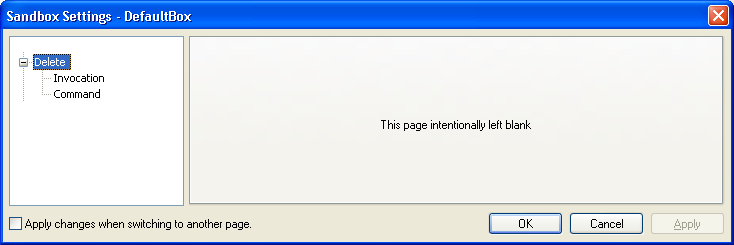
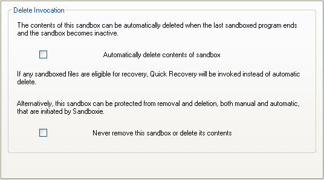
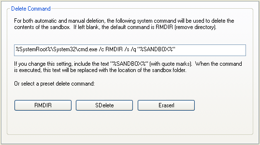

Delete Settings
"Delete" Settings Group
Sandboxie Control > Sandbox Settings > Delete:

Here you configure when and how Sandboxie deletes the sandbox.
Invocation
Sandboxie Control > Sandbox Settings > Delete > Invocation:

Use this settings page to indicate when you want the sandbox deleted:
- Deleted only by explicit request: Keep both checkboxes cleared
- Deleted regularly and automatically: Mark the first checkbox
- Never deleted: Mark the second checkbox
Note that while both checkboxes can be cleared, only one checkbox can be marked at any time.
As long as the second checkbox is marked, Sandboxie will not initiate any delete operation on the sandbox, even if you explicitly ask for it. Important: This does not protect the sandbox from being deleted by other programs.
Related Sandboxie Ini settings: AutoDelete, NeverDelete, DeleteCommand.
Command
Sandboxie Control > Sandbox Settings > Delete > Command:

Use this settings page to specify the system command that will be used to delete the sandbox. By default this is a simple RMDIR (remove directory) command. People who are concerned with privacy issues may choose to use secure deletion instead, as described in more detail in Secure Delete Sandbox.
You can use the buttons to select a preset command. The RMDIR button selects the simple RMDIR noted above.
The SDelete button uses SDelete by SysInternals/Microsoft to delete the contents of sandbox. Note that you will need to adjust the path to the command.
The Eraserl button uses Eraser by Heidi Computers to delete the contents of sandbox.